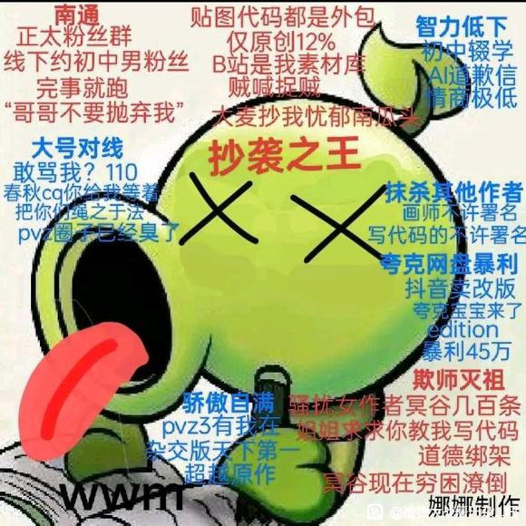

| 编辑协助
本页面受涉及人物相关事件受面过多，若有知情人士可对邮箱投稿 |
| 当前事件
截止2026年2月，此页面记载的恶俗人士仍然在高强度活动。 |
| 名师出高徒
师徒二人卧龙凤雏 |
曾佳伟，弱智圈钱窝囊废。
作为名师出高徒的高徒，他的圈钱能力和犯贱能力广大人民群众有目共睹。
1.抄袭之王：拿b站当自己的素材库，缝合了几十个up主的改版，原创植物只有12%
2.南通骚扰：创立正太粉丝群，和初中男粉丝见面，事后将其抛弃
3.大号对线：使用500万粉丝的大号和粉丝对骂，骂不过就打电话报警，对其他pvz的up发出死亡威胁
4.抹杀其他作者：杂交版的贴图和代码都是归其他作者外包，但是wwm不许他们署名，将画师气跑（这就是画风突变的原因）
5.欺师灭祖：2020年还是新手的伟伟迷找到了冥古川恋，发了上百条信息求她教自己修改游戏，不断骚扰女作家，在拿到pvz贴图修改器被她拉黑，现在冥古川恋濒临破产，B站乞讨度日，伟伟迷选择和她切断了联系（注：冥谷川恋实际上也是个低能废物，详情请见施遇卿）
6.夸克暴利：其和夸克网盘合作，打擦边球，规定游戏只能通过夸克网盘下载，从此谋取暴利45万，并且出了一期视频，夸克宝宝来拍甲方的马屁
7.智力低下：初中辍学，被人骂了之后用AI写道歉信，并且打死不承认，破绽越来越多，最后删除该动态。和植物大战僵尸公司ea合作，在外网发表杂交版，因其智力低下，游戏链接结尾写的是edition(商用)而不是mod（模组），导致ea公司吃了官司，被迫停止了杂交版手机小程序的推行
8.骄傲自满：曾经在官方视频下面回复，PVZ3包在自己手里，信誓旦旦的说杂交版天下第一，变成了单机版原神

（注：冥谷川恋实际上也是个低能废物，详情请见施遇卿）